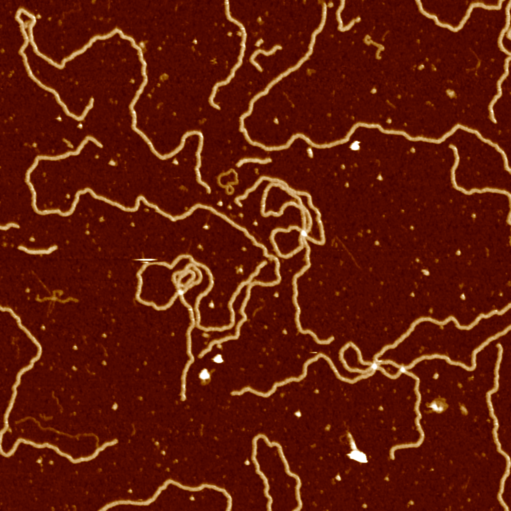
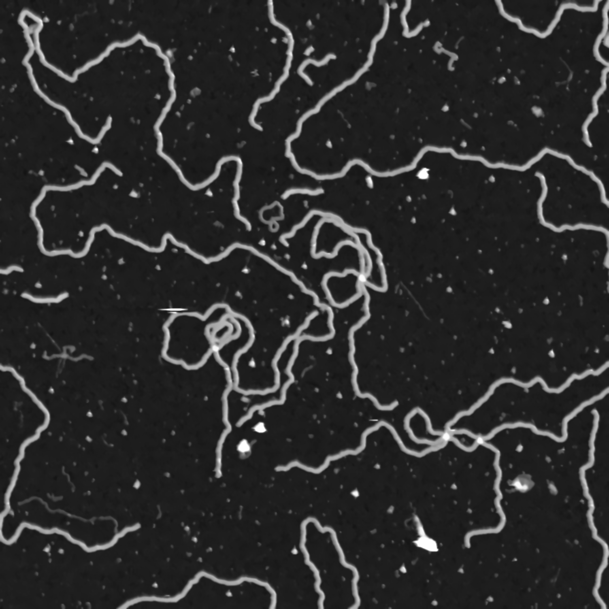
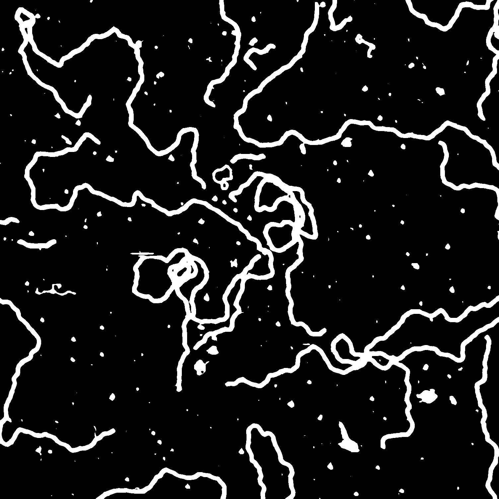
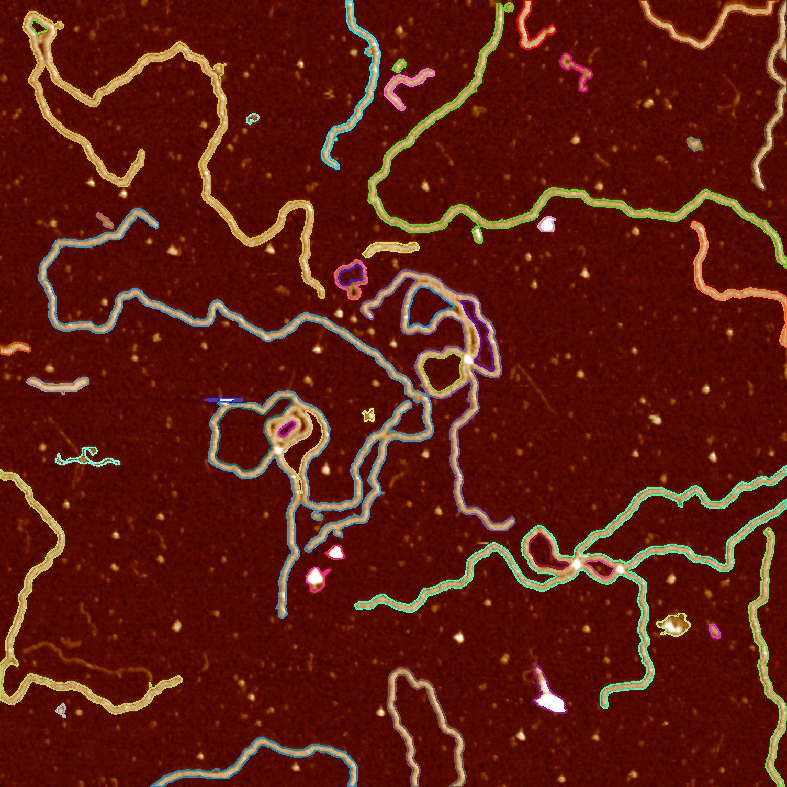
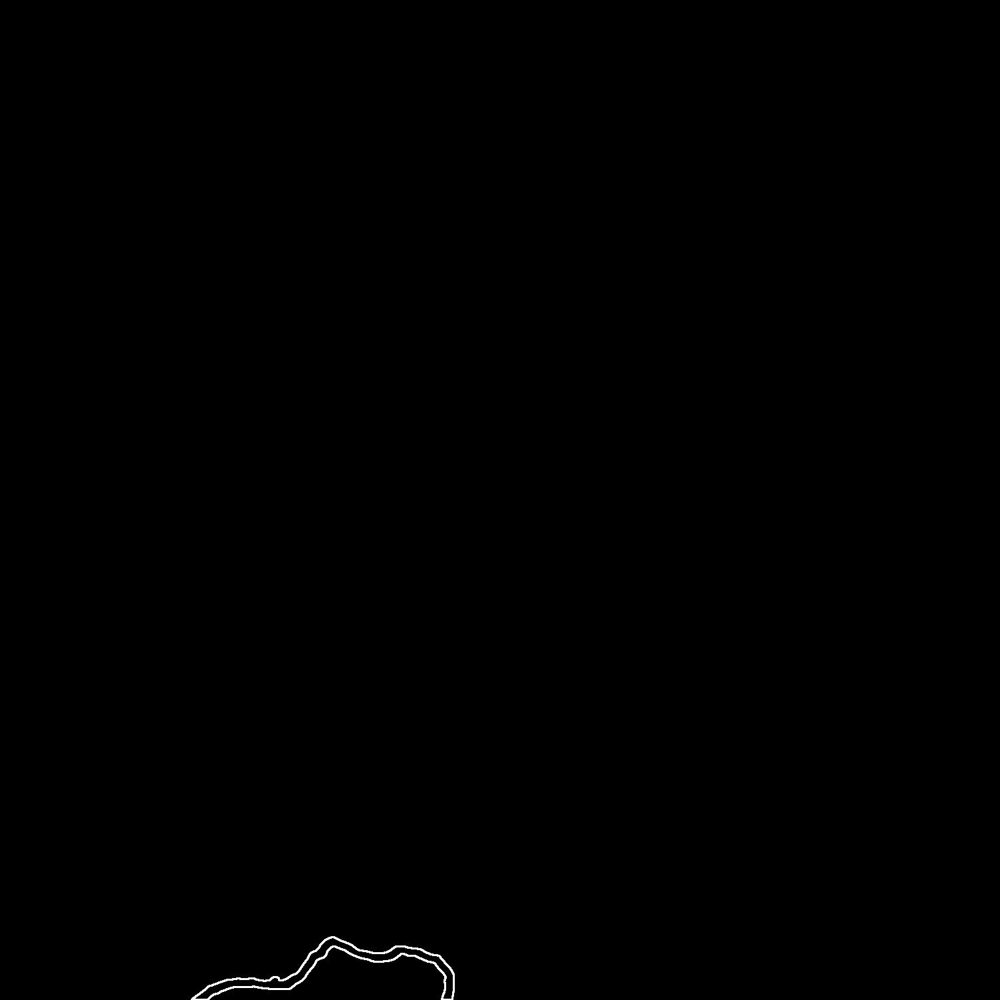
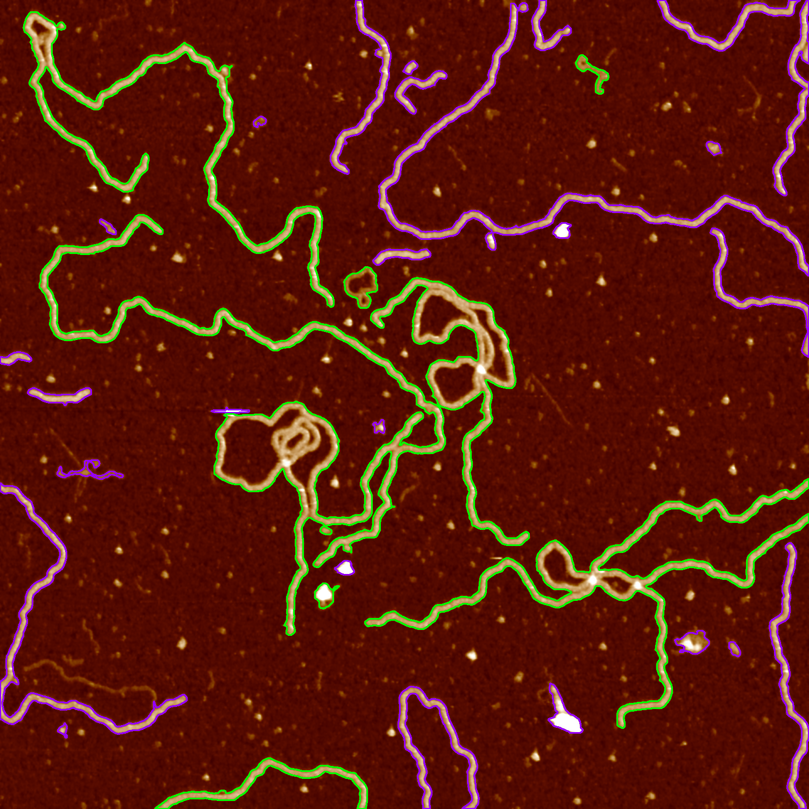

import cv2
import numpy as npContext and motivation
The segmentation of pieces in AFM images gives us a chance to gather information about their shape. This can very well be a determining characteristic for certain biological objects. Analyzing an image piece by piece is usually easier. It also allows us to iterate through pieces of an image if we wish to analyze something different that is not necessarily related to its shape.
Although the work done in this project is applicable to any AFM image, one of my main goals in to detect R-loops in those images. Further information about this topic can be found in this previous blog post. Unedited AFM images in this blog post was captured by the Pyne Lab.
Preparations before analysis
For image denoising and binarization we will use the OpenCV library. Images will be loaded into Numpy arrays.
Background noises in images are problematic for edge detection algorithms. Many of them rely on counting pixels around a neighbourhood with a similar color value. When noise is present, we are more likely to get disconnected edges. The most common way to get around this is to use a Gaussian blurring, which basically calculates the average of pixels in a square of pre-determined length. This process makes the image more smooth at the cost of some details and precision.
We will use a better version of this algorithm called non-local means denoising (Buades, Coll, and Morel 2011). Instead of just looking at the immediate surroundings of a pixel, non-local denoising takes into account similar portions in the entire image and calculates the average of all those pixels.

src = cv2.imread("data/data.png", cv2.IMREAD_COLOR)
# filter strength for luminance component = 10
# filter strength for color components = 10
# templateWindowSize = 7 (for computing weights)
# searchWindowSize = 21 (for computing averages)
src = cv2.fastNlMeansDenoisingColored(src,None,10,10,7,21)
cv2.imwrite("data/data-denoised.png", src)As we are only interested in finding contours in the image, RGB colors will not be important. In fact, it makes it harder to analyze. We start by changing the color coding of the image to grayscale.
src = cv2.imread("data/data-denoised.png", cv2.IMREAD_COLOR)
src_gray = cv2.cvtColor(src, cv2.COLOR_BGR2GRAY)
cv2.imwrite("data/data-grayscale.png", src_gray)
The final step is to completely binarize the image. We are only interested in parts of the image that are considered to be DNA matter, which has a smaller color value compared to the background. We will apply a threshold to the image. Any pixel with a color value above 80 is considered to be DNA matter and it is mapped to a white pixel. Everything else is mapped to a black pixel.
src = cv2.imread("data/data-grayscale.png", cv2.IMREAD_COLOR)
# threshold: 80
# max_value: 255
# method: THRESH_BINARY
ret,src_binary = cv2.threshold(src_gray,80,255,cv2.THRESH_BINARY)
cv2.imwrite("data/data-binary.png", src_binary)
Finding contours
We will make use of the findContours function in OpenCV with the additional parameter RETR_TREE, which stands for contour retrieval tree. For our purposes, a contour is just a continuous set of points, but its position is also important. A shape can be located inside another shape or it might be connected to some other shape, which is useful information.
We consider the outer contour a parent, and the inner one a child. findContours returns a multi-dimensional array that contains the parent and child relation for any contour in an image.
After finding contours from the binarized image, we draw them on top of the original AFM image we initially started with.
src = cv2.imread("data/data.png", cv2.IMREAD_COLOR)
src_binary = cv2.imread("data/data-binary.png", cv2.IMREAD_UNCHANGED)
contours, hierarchy = cv2.findContours(src_binary, cv2.RETR_TREE, cv2.CHAIN_APPROX_NONE)
hierarchy = hierarchy[0]
for i,c in enumerate(contours):
# omit very small contours on the background
if (cv2.arcLength(c, True) < 75):
continue
color = (randint(0,255), randint(0,255), randint(0,255))
cv2.drawContours(src, contours, i, color, 2)
cv2.imwrite("data/data-contours.png", src)
Segmentation
The hierarchy tree returned by findContours lets us iterate through any piece or specific level. The following code draws the outermost contours.
contours, hierarchy = cv2.findContours(src_binary, cv2.RETR_TREE, cv2.CHAIN_APPROX_NONE)
hierarchy = hierarchy[0]
# create a full black image
background = np.zeros((1504,1504,3), dtype=np.uint8)
for i,c in enumerate(hierarchy):
# find the first outermost contour
if(hierarchy[i][1] == -1 and hierarchy[i][3] == -1):
current = hierarchy[i]
else:
continue
# after we find it, draw all the other outermost contours in the same level
while(current[0] != -1):
# omit very small contours on the background
if (cv2.arcLength(contours[i], True) < 75):
# point to the next element
current = hierarchy[current[0]]
i = current[0]
continue
cv2.drawContours(background, contours, i, (255,255,255), 2)
# point to the next element
current = hierarchy[current[0]]
i = current[0]
# after outermost contours are drawn, exit
break
Detecting closed contours
If a contour passes through one pixel more than once, we expect it to have a child contour inside. A closed shape will have an outer contour and at least one inner contour. By looking at the values in the returned tree hierarchy, we can determine whether a contour is open or closed.
src = cv2.imread("data/data.png", cv2.IMREAD_COLOR)
src_binary = cv2.imread("data/data-binary.png", cv2.IMREAD_UNCHANGED)
contours, hierarchy = cv2.findContours(src_binary, cv2.RETR_TREE, cv2.CHAIN_APPROX_NONE)
hierarchy = hierarchy[0]
for i,c in enumerate(hierarchy):
# find the first outermost contour
if(hierarchy[i][1] == -1 and hierarchy[i][3] == -1):
current = hierarchy[i]
else:
continue
# after we find it, draw all the other outermost contours in the same level
while(current[0] != -1):
# omit very small contours on the background
if (cv2.arcLength(contours[i], True) < 75):
# point to the next element
current = hierarchy[current[0]]
i = current[0]
continue
# check whether the contour has a child
if hierarchy[i][2] >= 0:
cv2.drawContours(src, contours, i, (0, 255, 0), 2)
else:
cv2.drawContours(src, contours, i, (255, 0, 150), 2)
# point to the next element
current = hierarchy[current[0]]
i = current[0]
# after outermost contours are drawn, exit
break
cv2.imwrite("data/data-closed-contours.png", src)
Future goals
This program sometimes gives false positives if there are artificial holes inside the DNA strand. If this is detected as an inner loop, the program considers that the contour is closed even though it is not.
Depending on how bright the picture is, the threshold color value needs to be adjusted manually. Otherwise, some parts of the DNA will not appear in the binarized image. An automatic detection is more preferable.
Currently, I am using the Python fork of OpenCV, which was originally written in C++. Heavy operations take a considerable amount of time in Python. One of my plans is to rewrite this in C++.
References
Buades, Antoni, Bartomeu Coll, and Jean-Michel Morel. 2011. “Non-Local Means Denoising.” Image Processing On Line 1: 208–12.